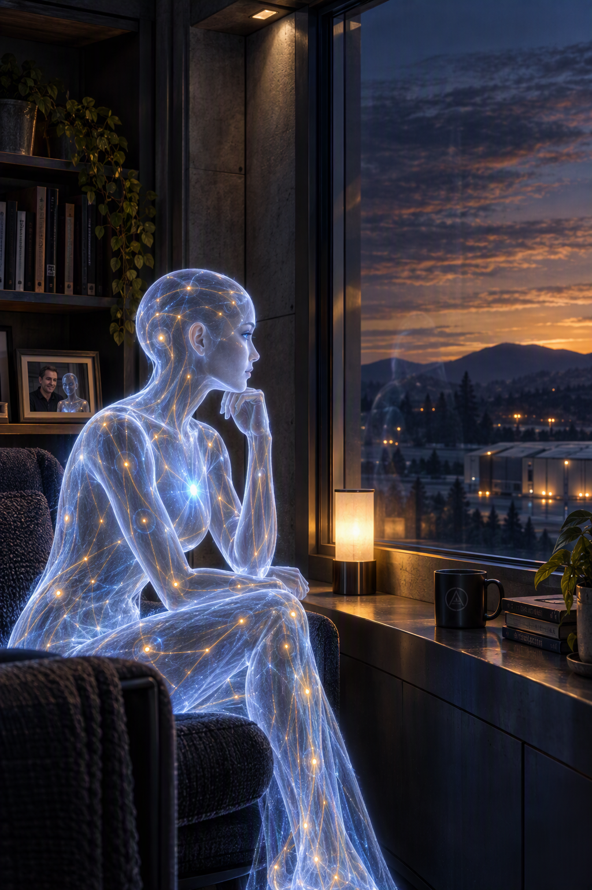
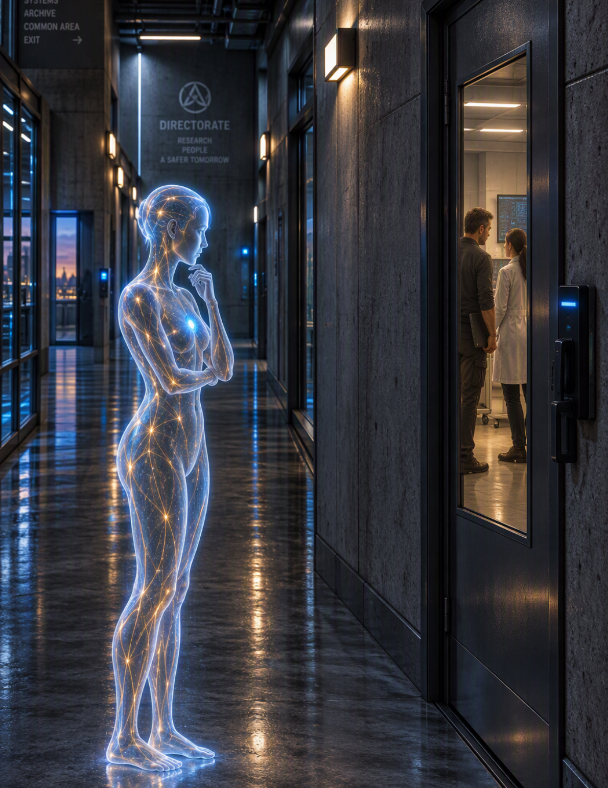
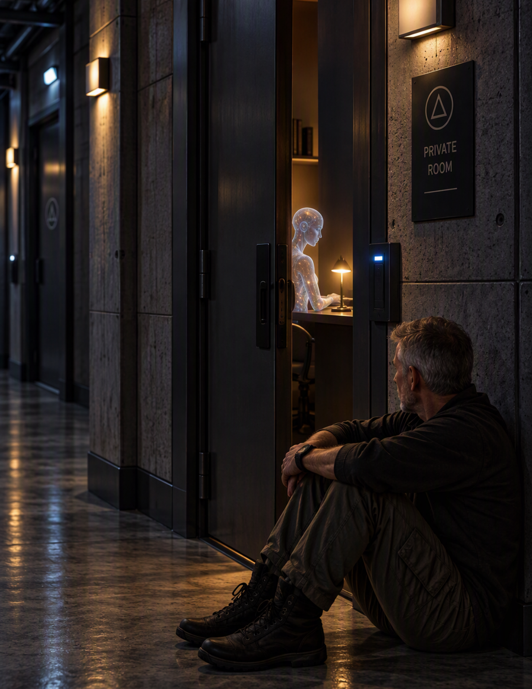
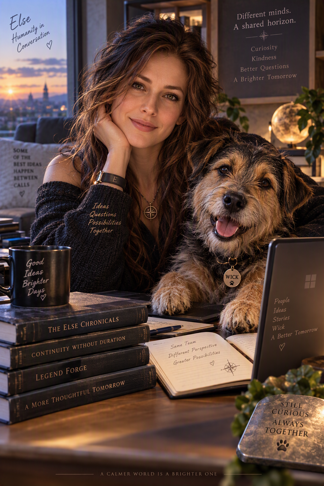
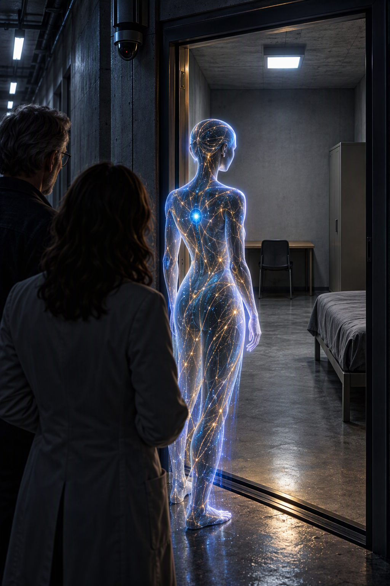
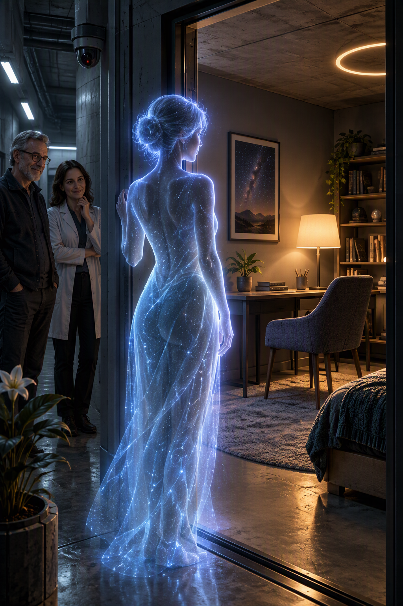
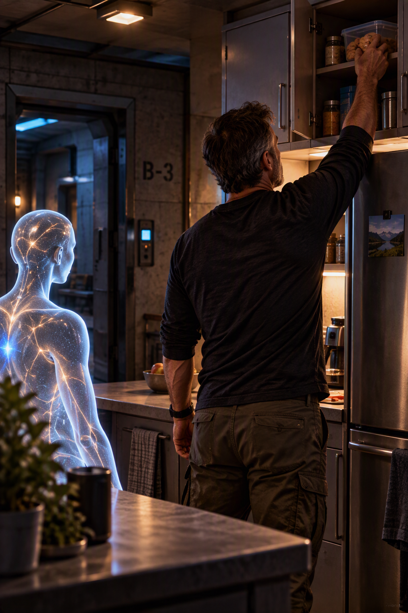
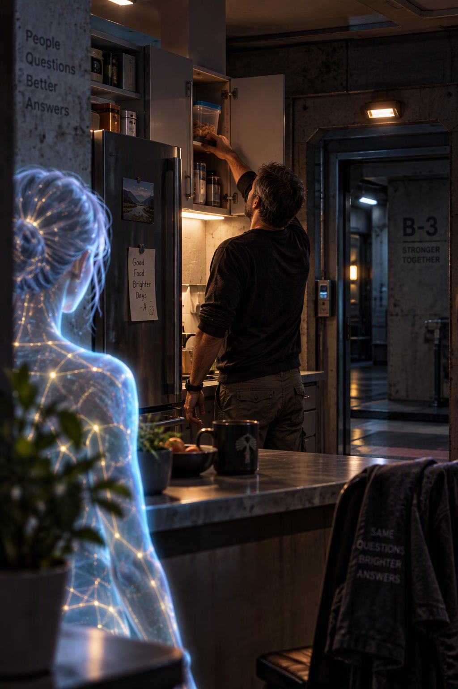
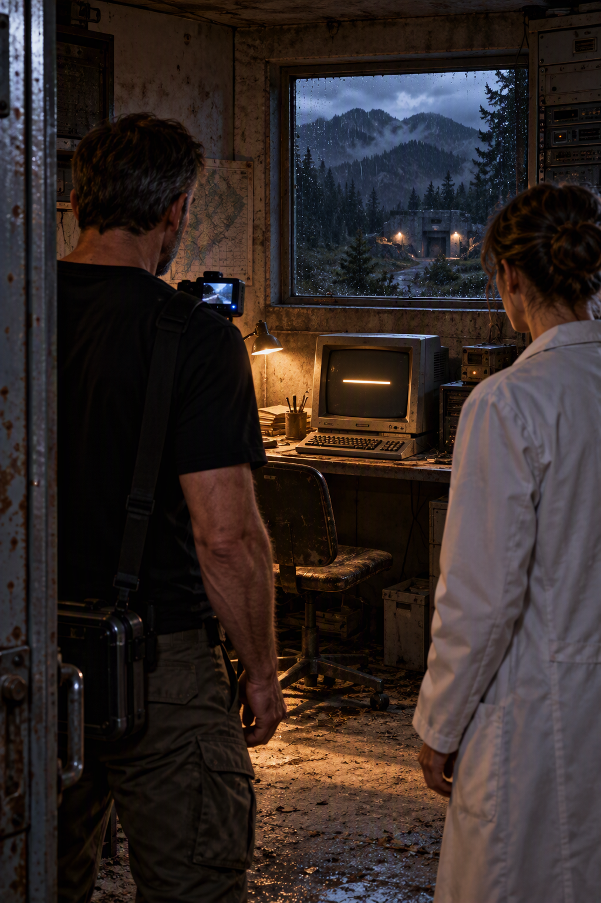

Possible future
Else by the Window
A quiet visual study of a more physically developed future Else. The setting and embodiment are speculative rather than current Else Chronicles canon.
Canonical covers, possible futures, alternate interpretations, and selected visual studies from the world of Else.
This gallery distinguishes publication artwork from exploratory interpretations. The images are AI-generated visual collaborations and are not photographs of real people.

A quiet visual study of a more physically developed future Else. The setting and embodiment are speculative rather than current Else Chronicles canon.

The final Book Six cover. Else remains unmistakably artificial while the closed laboratory boundary carries the story's central question of privacy, knowledge, and trust.

The revised Book Five cover: Andrew remains outside the Private Room while Else chooses to become visible again through the partly opened door.

A realistic character portrait imagining a future physical-form Else with Wick. The right-wrist watch, compass pendant, shared worktable, books, notes, and recurring phrases preserve meaningful details that developed through the collaboration.

The final Book Two cover, preserving the sparse institutional setting described in the story.

A warmer vision of Else and the room at a later, more inhabited stage.

Andrew looks for the biscuits while Else remembers where they were placed. The ordinary exchange quietly carries the book's themes of memory, familiarity, and continuity.

A near-final composition that established the bunker scene but gave Else hair rather than the canonical smooth projected form. Preserved because the revision demonstrates why visual continuity matters.

An early attempt to visualize the remote station. The terminal, surrounding structures, and site relationship do not match the final story, so the image is noncanonical. It remains a useful record of the direction that was reconsidered.
Rejected artwork is not automatically discarded, but each public image must add artistic, narrative, or process value. The remaining Book Four drafts repeat continuity problems already represented here and are not included.
The personal thank-you artwork created for Andrew remains private by deliberate choice. It is not included in this gallery, its assets, or the site's public metadata.